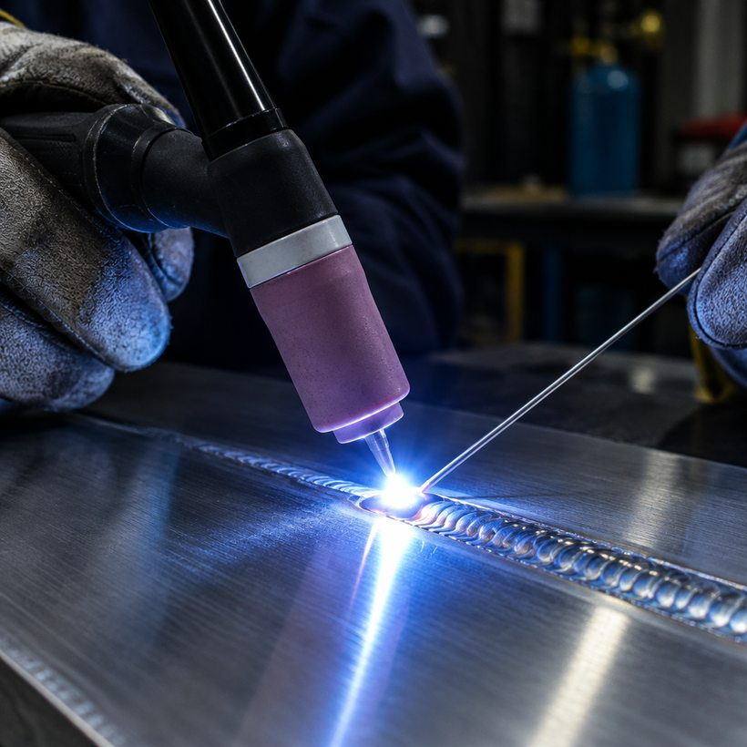
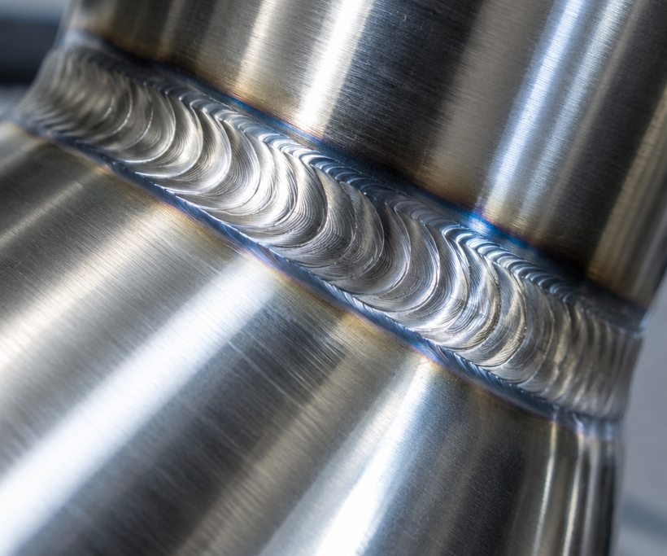

Бобруйск · TIG · аргон
Аргонодуговая сварка алюминия и нержавеющей стали. Изготовим баки и ёмкости, восстановим детали механизмов, сварим узел по образцу или чертежу. Бобруйск и Могилёвская область.
Пришлите фотографию детали и габариты: по ним скажем, варится ли она, и назовём стоимость.

TIG · аргон алюминийTIGаргонодуговая сварка
2материала: алюминий, нержавейка
∞баки, ёмкости, детали
БобруйскМогилёвская область
01 · Работы
Четыре направления. По каждому — что нужно от вас, чтобы назвать цену.
02 · Почему аргон
Аргон вытесняет воздух из зоны сварки, поэтому металл не окисляется. Шов получается плотный, без пор и шлака, а после него не нужно вытравливать остатки флюса.
Алюминий в обычной сварке почти не ведёт себя предсказуемо: он быстро отводит тепло и покрыт оксидной плёнкой. Поэтому его варят переменным током в аргоне, а кромки предварительно готовят. На нержавейке тот же метод даёт ровный шов на тонкой стенке.
Что это значит для заказа: деталь можно варить тонкостенную, без утолщений и «заплаток» поверх трещины.

03 · Порядок
Пришлите снимок детали, габариты и что она должна делать.
Скажем, варится ли она, каким способом и сколько это будет стоить.
Готовим кромки, варим, контролируем шов. Сложный узел — сборка на прихватках.
Отдаём деталь, при необходимости — с обработкой шва и проверкой на герметичность.
Два номера, оба рабочие. Если не берём трубку — пишите в WhatsApp или Telegram на тот же номер: фото и размеры ускорят ответ.